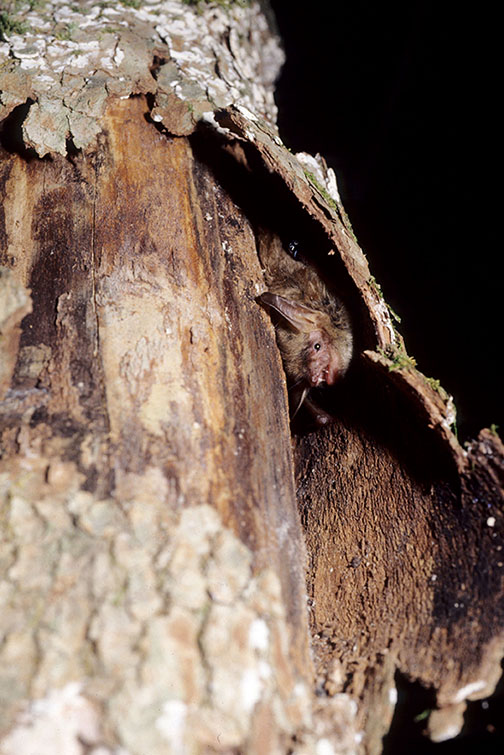
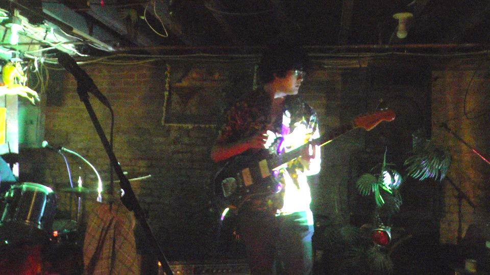

"PLACEHOLDER"
May-June, 2025
CONTENTS
SECTION I : Overview
SECTION II : My History
Overview
description/activities
Something cool about art is that there's a lot you can use for a piece of work. Whatever resources
you need ultimately depend on what medium you'll be using.
These are some examples:
In traditional (term for non-digital) art people sometimes incorporate objects into the piece
itself, a cool example I saw once was the tops of coca-cola bottles glued onto a canvas. It's common to
reuse trash or scraps. I've used scraps of fabric in the past.
For painting (oil/acrylic), most often you'll need a canvas, paintbrushes, and the paint itself.
You'll also need a surface to mix paints on. For oil paint you'll need paint thinner.
For sketching, you'll need something to sketch with (a pen, pencil, anything that makes a mark) and
something to sketch on. Most commonly paper is used.
For digital you'll need some type of device, often a tablet is used, and a drawing software.
Sometimes the softwares is free, sometimes you'll need a subscription.
Evaluating what you'll need depends on whatever medium you want to use and how you want the image to
look and feel.
My personal favorite method is digital painting and drawing.
I have a few goals in mind while creating. First, I like to believe art should be made for oneself firstly,
in whatever way that might mean to someone. For me, that means I am enjoying creating whatever it is I am
making and that I'm proud of it. I love creating so I am usually enjoying myself when making something. As
for having pride, I often have doubt in myself, but the more I create, the better I get at creating. Knowing
that motivates me a lot.
Secondly, I wish to reach something called "flow". Flow is when you get so engrossed into a task
time does not matter. I picked this concept up from my Theory of Knowledge class. It applies to many things
but a good example is digging into a good book. That goes hand-in-hand with the first task, but when I reach
"flow" is usually when I'm most expressive and creative with my art. It can also be pretty relaxing
or it can hype me up a lot. Depends on what I'm making.
Third, I wish to convey certain moods or messages in my art. It can be something deep or a
means of self expression - or as simple as "it looks cool" and "it makes me laugh." It doesn't always have
to be so serious.
Fourth, I strive to always improve. And again, the more I create, the better my work gets. It's all
practice, research, and feedback that helps me. I love getting feedback from my friends. What also helps me
is taking the media that I like and getting little sparks of inspiration from that. Certain ways of
brainstorming also help, strategies such as association and mixing things together to see whatever comes out
are quite handy.
All art on this website was made by me.
My History
I started drawing ever since I could hold a pencil. I wasn't any good at it, as the hand-eye coordination of
baby me wasn't great (It's still not great but I've improved a lot!), but I still was supported luckily. I
was
mostly interested in fictional creatures such as dragons and phoenixes. Sometimes I'd draw cats too. I
avoided humans as I didn't find them easy to draw. I started uploading my drawings online very early in my
life, a little before I turned 13. At this point in my life I was a "furry", so I drew animals mostly. I
can't remember before 14 too well, but I knew I had multiple art apps, some of which held online
communities. I
was a part of these communities for a while and made a few online friends on them, a few of whom I still
speak
to as I'm 17. I made animation memes when I was a teenager and uploaded those on youtube alongside another
friend I had in real life. One website I do remember often visiting was Deviantart, though this was a little
after my animation meme phase (I still liked animation memes, just not to the same degree). It was around
this
time I started to learn basic concepts like color composition, the color wheel, shapes and the like. I
started becoming interested in painting around 15-16
and joined a painting class at Hellgate during grade 11. That's when my interest in art started to grow
exponentially and I started taking it more seriously. I picked up traditional painting quick as I already
knew how to paint digitally fairly well. I started to become more interested in scenery, but still had some
interest in characters. Last semester of this year I was in printmaking, where I experimented with my style
and dabbled in mixed media. At this point in my life I try to not conform to social expectations and try
to do my own thing, which in turn showed in my art with my experimentation. Part of that was testing out
my style and themes in my work and character designs.
Currently, I love to mess around with my art and my interest lay mostly in scenery, symbolism, and
characters. I want to keep messing around with colors and styles and try to incorporate environmental
storytelling into my pieces. Because I am a constantly shifting person, so is my art and I've slowly come
to accept that as being a part of my learning process. I still occasionally post online, but only to my
friends and not on any public accounts. The people who I have made friends with in this year, my
highschool years, and throughout my teenage years have encouraged me to keep making art and supported my
growth. I only hope to keep growing and improving. I couldn't be any happier with where I'm going.
THE PROCESS OF CREATING GRAPHICS
"Template 1"

STEP 1 : I start with brainstorming what themes I want to go with using simple words. I also look at inspiration while I do this. Themes/ideas I came up with (which can change down the line): Monochrome, thorns, bone, barbed wire, pixelated?, photos, cats or bats
STEP 2 : I know I'll be creating graphics for this website so I put down the colors I am already using for the website. I know the background is a darker color so the accents must be lighter colors.
STEP 3 : I list the key words I came up with on my canvas and start sketching ideas. I try concepts by themselves as well as combined concepts.
STEP 4 : I pick my favorite sketches and narrow it down to two of each graphics I want (dividers & little symbols).
STEP 5 : I start with a messy base.
THE PROCESS OF [PLACEHOLDER]
"Template 2"

description here
My Mentors
I have had many influences on my art but I feel like I have a handful who have been the most impactful. This
includes direct or indirect inspiration and teaching. Some are more old and some are more
current. Some of these people I know, some I don't.
This includes:
→ My parents (My dad especially)
→ My older sister
→ One of my online friends of 5 years, Mana
→ Another old friend, Moko
→ A more recent online bud, Rurik
→ Same as above, Growl
→ Laura Elliot
→ Kacey Arceniega
→ Various of old Youtube tutorials and lessons
→ @DeadSound (Youtube)
More when I was younger
→ @voidmind2 (Twitter or X)
→ @zilodak (Twitter or X)
→ @nikoco_11 (Twitter or X)
→ @stabbyguys (Twitter or X)
→ @venz228 (Instagram)
A Brief History of Digital Art
The history of digital art is a little ambiguous. The first drawing program was created in 1963 by Ivan
Sutherland, which was called Sketchpad. A pen called a light pen was used to create lines on the screen
of a computer. It was innovative, allowing users to zoom in and out of drawings, similar to how drawing
programs can modernly. In 1974, Richard Shoup created SuperPaint. With SuperPaint, users were able to use
colors, manipulate those colors, and animate. The ways you could adjust colors on SuperPaint was with sliders
that affected saturation, hue, and brightness. This system is still used in graphic software. In 1984 the
Macintosh was released, the first personal computers. The PCs came with a drawing program called MacPaint.
MacPaint was the first experience of average people creating digital drawings and paintings. A year later
Microsoft Paint was released. In 1990 Adobe Photoshop released which could mimic brushstrokes, though it was
used primarily for photo editing. With updates it has been able to keep up and is still used by many people
modernly. Art apps and programs such as Procreate, ibisPaint X, and Clip Studio Paint were released in the
early 2000's and have only improved since then. People are even able to make their own digital brushes
now (some of which look super realistic).
Worldwide Connection
As corny as it might sound, there's been connections between humans and art since the beginning of time.
There is art over 9,000 years old where people have come together and left a mark on the world,
saying, "I'm here. We've been here." The cave art at Cueva de las Manos is exactly that.

"Cave of the Hands"
Art is saying without words. It can be a tool, a weapon, a hobby, entertainment, political, and a way to
communicate and express oneself. With the advancements of technology, that art is more easily accessible
and easier to share.
The internet has let me be myself in a way real life hasn't allowed for a long, long time. With the
progression of society and having more freedom at 17 I get to express myself more but still isn't the same.
Online I get to be freely LGBTQ+ and I get to unmask my autism just a little more than in real life.
I get to feel my emotions online. I know several people who have experiences similar to mine in that regard.
Montana isn't exactly the safest place to do all of that. As someone who was raised with the internet, I am
incredibly lucky I get to spread my art online and find connections with people similar to myself, even if
they live miles away.